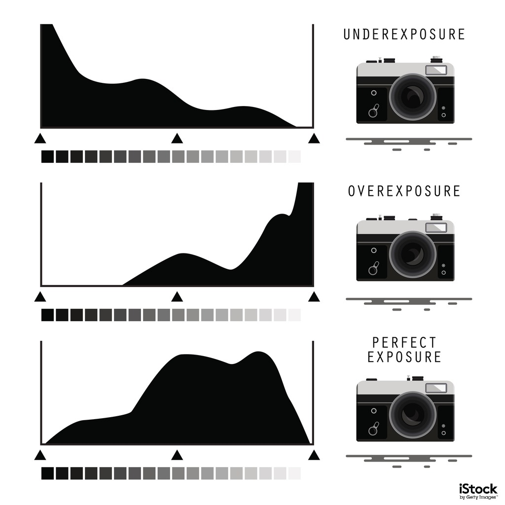
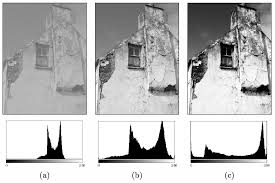
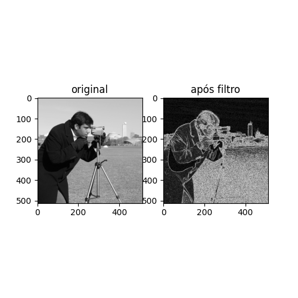
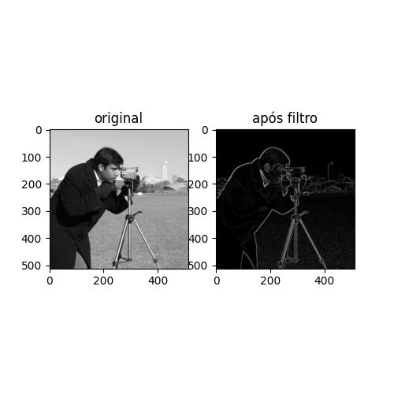
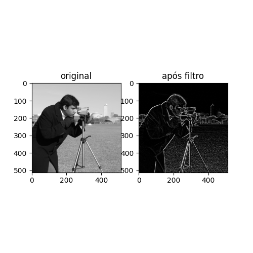
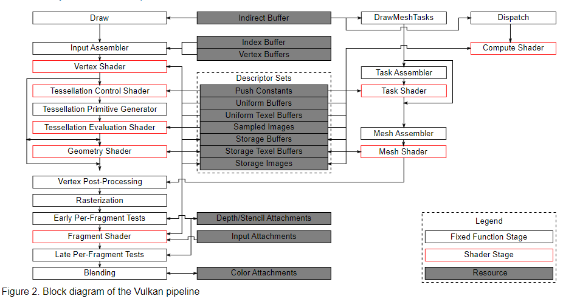

Computação visual
Aula 1:
O que eu achava que era:
1. Programar GUIs, UX (User experience) e design de sites e softwares em geral.
2. Modelação 3D e 2D.
Exemplos de sub-área
Computação Gráfica
Exemplo: Shading utilizando OpenGL
Site: https://learnopengl.com/Getting-started/Shaders
Descrição: É um tutorial sobre como funciona o OpenGL, ele inclui exemplos, explicação, código
fonte para auxiliar, exercícios com resposta e a documentação é bem escrita.
Motivo: Realmente é bem feito esse tutorial, e como é feito em C++ eu também tenho familiaridade,
além de ser bem simples.
Visão Computacional
Exemplo: Detecção de digital utilizando Edge Detection
Site: https://chooch.ai/computer-vision/what-are-the-applications-of-edge-detection/#:~:text=Applying%20edge%20detection%20makes%20it,cases%3A%20self%2Ddriving%20cars.
Site2: https://d1wqtxts1xzle7.cloudfront.net/68544602/0031-3203_2887_2990078-120210803-2319-15ky6jc.pdf?1627992344=&response-content-disposition=inline%3B+filename%3DEdge_Detection_in_fingerprints.pdf&Expires=1645033301&Signature=I5uaw~tdtV5X~W4fs96CH8DEqy7OJaZQEJPk-mGBc4~QDiNmbOBaU0W5hDnYnknEr9vAYu3xhHQszNWsqF7IWirdRvRSJqBmmYE1SEiQi0xpzagNJgpca0G-oplXCC4EfUuG-FcI6rh2~ICkcN57mX5whYRDYSgzel36w3WySNkz6EjKULGqhl3CZUgk8JzlMUDbAndjX~ifw-wzVkh5GNdta6Ry7MYN9ZVRPVy2Rw-CbrsNg8hkDav~eS40v4Aq1hZ9Ry1gpIc2qoRbDNlYUEkves4jJLQkhOvWB5NwHsdFLYHEQO91caJxVmSvRWaltWZ-ZwJS9eM6dO3nDH62dA__&Key-Pair-Id=APKAJLOHF5GGSLRBV4ZA
Descrição: Utilizando Edge detection para verificar o contorno da digital em contraste com o fundo, e diminuir o ruído causado.
Motivo: É uma tecnologia usada atualmente em vários sistemas, como bancos para verificar a autenticidade da pessoa.
Processamento de Imagens
Exemplo: Transmissão e codificação de imagens.
Site: https://www.tutorialspoint.com/dip/applications_and_usage.htm
Descrição: Codificação e transmissão de imagens e vídeos, com mais rapidez e melhoria nas imagens, permitindo até transmissão ao vivo (LIVE)
Motivo:Parecia interessante, também é utilizado bastante hoje em dia, principalmente por conta da pandemia.
Aula 2
Problema: Identificação Automática de placas de veículo
Solução: Utilizando Python, OpenCV, biblioteca pytesseract e Raspberry PI para detectar as letras da placa
Como o filtro ajudou: Foi utilizado o Blur gaussaniano para melhorar a imagem
site/ papel: https://professor.luzerna.ifc.edu.br/ricardo-antonello/wp-content/uploads/sites/8/2016/04/IDENTIFICA%c3%87%c3%83O-AUTOM%c3%81TICA-DE-PLACA-DE-VE%c3%8dCULOS-ATRAV%c3%89S-DE-PROCESSAMENTO-DE-IMAGEM-E-VIS%c3%83O-COMPUTACIONAL-.pdf
Importante: No papel se encontra, o código usado e exemplos utilizando placas

Imagem pega de https://professor.luzerna.ifc.edu.br/ricardo-antonello/wp-content/uploads/sites/8/2016/04/IDENTIFICA%c3%87%c3%83O-AUTOM%c3%81TICA-DE-PLACA-DE-VE%c3%8dCULOS-ATRAV%c3%89S-DE-PROCESSAMENTO-DE-IMAGEM-E-VIS%c3%83O-COMPUTACIONAL-.pdf
Aula 6, eu acho
Com base no material disponível no Moodle (slides sobre “Transformações de Intensidade e Filtragem Espacial”, em particular, os tópico de transformação de intensidade e de processamento de histograma – slides 13 a 57) e referências adicionais, faça uma pesquisa sobre como é possível:
1.Realizar a limiarização de uma imagem usando Python e scikit-image.
2.Plotar o histograma de uma imagem tons de cinza usando Python, scikit-image e matplotlib.
3.Plotar o histograma de uma imagem colorida (um histograma por canal de cor) usando Python, scikit-image e matplotlib.
4.Equalizar o histograma de uma imagem usando Python e scikit-image.
5.Detectar (concluir) que uma foto está subexposta ou que está superexposta, analisando o histograma.
6.Detectar (concluir) se uma imagem está com baixo contraste ou alto contraste, analisando o histograma.
Para cada item acima, inclua um código que exemplifica cada tarefa e uma imagem resultante do código (por exemplo, no item 2, a imagem deve conter a imagem em tons de cinza e o histograma da imagem).
Inclua as referências usadas na pesquisa.
referências:
Imagem
Foto original
código para foto cinza
import matplotlib.pyplot as plt
import numpy as np
from skimage import data, img_as_float
from skimage.color import rgb2gray
from skimage.exposure import equalize_hist, cumulative_distribution
img = plt.imread("foto.jpg")
img_gray = rgb2gray(img)
plt.imshow(img_gray, cmap="gray")
plt.show()
Foto cinza
Limiarização
*Nota: a foto tem que estar em preto e branco
#1
#limiarização com 0.7
img_res = (img_gray > 0.7)*1
plt.imshow(img_res, cmap="gray")
plt.show()foto após limiarização
#2
#histograma imagem cinza
plt.hist(img_gray.ravel())
plt.show()
Histograma da figura cinza
#3
#histograma imagem colorida e por canal
red = img[:,:,0]
green = img[:,:,1]
blue = img[:,:,2]
plt.hist(red.ravel(),color='red',alpha=0.4, label='Vermelho')
plt.hist(green.ravel(),color='green', alpha=0.2, label='Verde')
plt.hist(blue.ravel(),color='blue',alpha=0.5, label='Azul')
plt.legend(loc='upper right')
plt.show()
Histograma da figura colorida e separada por canais RGB
*Nota: a foto está em preto e branco
#4
#histograma imagem equalizado
img_eq = equalize_hist(img_gray)
plt.hist(img_eq.ravel())
plt.show()
Histograma da figura equalizada
5.
para detectar se uma foto está subexposta ou sobrexposta, pode se verificar o histograma da imagem em preto e branco, se ela for subexposta o histograma estará com uma incidência maior no lado esquerdo do gráfico (valor 0), se ela for superexposta ela terá uma incidência maior no lado direito (valor 1)
Exemplo:
6.
para detectar se uma foto está com alto contraste ou baixo contraste, pode se verificar o histograma da imagem, se ela for contrastante o gráfico parecerá um U, ou seja,haverá uma incidência maior nos cantos da imagem (0 e 1), se ela tiver pouco contraste haverá pouca incidência nos cantos do gráfico (0 e 1)
Exemplo:
Aula 10 eu acho
Faça uma pesquisa sobre como é possível aplicar os operadores de gradiente Roberts, Prewitt e Sobel para detectar bordas em uma imagem, usando a linguagem Python.
Para cada operador, inclua o trecho de código que exemplifica a operação e um conjunto de quatro imagens (para cada operação) mostrando a imagem original, a imagem resultante da operação na horizontal, a imagem resultante da operação na vertical e a imagem representando a magnitude do gradiente.
Inclua as referências usadas na pesquisa.
imagens do skimageGradiente Roberts
Algoritmo de detecção de borda, sendo o mais antigo e simples, ele utiliza duas matrizes 2x2 para encontrar variações em X e Y
Algoritmo: |G| = raiz quadrada de((Gx^2) + (Gy^2))
vantagens :
- Rápido
- Simples de implementar
Desvantagens:
- Sensível ao ruído
Código:
import cv2
import numpy as np
from scipy import ndimage
from skimage import data
import matplotlib.pyplot as plt
#matrizes
robert_X = np.array( [[1,0],[0,-1]] )
robert_Y = np.array( [[0,1],[-1,0]] )
#imagem
img = data.camera()
#algoritimo
vertical = ndimage.convolve( img, robert_X )
horizontal = ndimage.convolve( img, robert_Y )
final_img = np.sqrt( np.square(horizontal) + np.square(vertical))
#imprime as imagens
fig = plt.figure(figsize=(5, 5))
fig.add_subplot(1, 2, 1)
plt.imshow(img,cmap='gray')
plt.title('original')
fig.add_subplot(1, 2, 2)
plt.imshow(final_img,cmap='gray')
plt.title('após filtro')
plt.show()
Resultado
Como se pode observar, o gradiente é muito sensível ao ruido da imagem
referências:
https://lapix.ufsc.br/metodos-no-domino-do-espaco-2-deteccao-de-bordas/Gradiente Sobel
Algoritimo de detecção de borda, parecido com o Roberts, ele utiliza, normalmente, 2 matrizes 3x3
Algoritimo: |G| = |Gx| + |Gy|
Vantagens:
- Por usar uma máscara 3x3 ele é mais preciso que o Roberts, ou seja, ele sofre menos com os ruídos na imagem
Desvantagens:
- Por utilizar uma máscara maior, ele é mais complexo
Código:
import cv2
import numpy as np
from scipy import ndimage
from skimage import data
import matplotlib.pyplot as plt
#imagem
img = data.camera()
#algoritimo
vertical = cv2.Sobel(img,cv2.CV_64F,1,0,ksize=5)
horizontal = cv2.Sobel(img,cv2.CV_64F,0,1,ksize=5)
final_img = cv2.addWeighted(abs(vertical), 0.5, abs(horizontal), 0.5,0)
#imprime as imagens
fig = plt.figure(figsize=(5, 5))
fig.add_subplot(1, 2, 1)
plt.imshow(img,cmap='gray')
plt.title('original')
fig.add_subplot(1, 2, 2)
plt.imshow(final_img,cmap='gray')
plt.title('após filtro')
plt.show()
Resultado:
Como pode ver, ele sofre bem menos com ruido
Referências:
https://lapix.ufsc.br/metodos-no-domino-do-espaco-2-deteccao-de-bordas/Gradiente Prewitt
Algoritimo de detecção de borda, parecido com o de Sobel, mas com 3 matrizes, sendo que 1 delas é rotacionada em 90 graus 3 vezes, o que faz com que seja 8 matrizes
Vantagens:
- Ainda mais preciso
Desvantagens:
- Ainda mias complxo
Código:
import cv2
import numpy as np
from scipy import ndimage
from skimage import data
import matplotlib.pyplot as plt
#imagem
img = data.camera()
#matriz
wit_x = np.array([ [1,1,1], [0,0,0], [-1,-1,-1] ])
wit_y = np.array([ [-1,0,1], [-1,0,1], [-1,0,1] ])
#algoritimo
vertical = cv2.filter2D(img, -1, wit_x)
horizontal = cv2.filter2D(img, -1, wit_y)
final_img = vertical+horizontal
#imprime as imagens
fig = plt.figure(figsize=(5, 5))
fig.add_subplot(1, 2, 1)
plt.imshow(img,cmap='gray')
plt.title('original')
fig.add_subplot(1, 2, 2)
plt.imshow(final_img,cmap='gray')
plt.title('após filtro')
plt.show()
Resultado:
Melhor detecção de borda
Referências:
https://lapix.ufsc.br/metodos-no-domino-do-espaco-2-deteccao-de-bordas/Aula 12
Faça uma pesquisa sobre APIs gráficas e elabore um resumo sobre seus achados. Para cada API gráfica (descreva pelo menos duas), inclua como a pipeline é documentada pelos desenvolvedores da API e quais linguagens de shading (shaders) são suportadas por cada API. Mostre um exemplo de código que usa cada API gráfica (pode ser um “Hello, World!” gráfico – renderizar um triângulo na tela), um exemplo de código de shader para cada API gráfica e um exemplo de aplicação que usa cada API gráfica.
Nota: não connsegui utilizar a biblioteca GLFW/glfw3.h e como ela é necessária para ambos as APIs utilizadas o código foi pego do site, mas não consegui executar
OpenGL
De acordo com a wiki: "OpenGL é o nome para uma especificação que descreve o comportamento de um sistema de renderização baseado em rasteirização"
Por ser uma especificação ele não tem código fonte, e normalmente o vendedor de hardware que implementa as especificações e funcionalidades
Sobre qual linguagem podem ser utilizadas, oficialmente apenas C ou C++ estão vinculadas, mas existem outras linguagens vinculdas que não são oficiais, como Python, C#, Lua etc.
Pipeline:
Informações sobre a pipeline podem ser encontradas em:
https://www.khronos.org/opengl/wiki/Rendering_Pipeline_Overview
// CPP program to render a triangle using Shaders
#include GL\freeglut.h
#include GL\glew.h
#include iostream
#include string
std::string vertexShader = "#version 430\n"
"in vec3 pos;"
"void main() {"
"gl_Position = vec4(pos, 1);"
"}";
std::string fragmentShader = "#version 430\n"
"void main() {"
"gl_FragColor = vec4(1, 0, 0, 1);"
"}";
// Compile and create shader object and returns its id
GLuint compileShaders(std::string shader, GLenum type)
{
const char* shaderCode = shader.c_str();
GLuint shaderId = glCreateShader(type);
if (shaderId == 0) { // Error: Cannot create shader object
std::cout "Error creating shaders";
return 0;
}
// Attach source code to this object
glShaderSource(shaderId, 1, &shaderCode, NULL);
glCompileShader(shaderId); // compile the shader object
GLint compileStatus;
// check for compilation status
glGetShaderiv(shaderId, GL_COMPILE_STATUS, &compileStatus);
if (!compileStatus) { // If compilation was not successful
int length;
glGetShaderiv(shaderId, GL_INFO_LOG_LENGTH, &length);
char* cMessage = new char[length];
// Get additional information
glGetShaderInfoLog(shaderId, length, &length, cMessage);
std::cout "Cannot Compile Shader: " cMessage;
delete[] cMessage;
glDeleteShader(shaderId);
return 0;
}
return shaderId;
}
// Creates a program containing vertex and fragment shader
// links it and returns its ID
GLuint linkProgram(GLuint vertexShaderId, GLuint fragmentShaderId)
{
GLuint programId = glCreateProgram(); // create a program
if (programId == 0) {
std::cout "Error Creating Shader Program";
return 0;
}
// Attach both the shaders to it
glAttachShader(programId, vertexShaderId);
glAttachShader(programId, fragmentShaderId);
// Create executable of this program
glLinkProgram(programId);
GLint linkStatus;
// Get the link status for this program
glGetProgramiv(programId, GL_LINK_STATUS, &linkStatus);
if (!linkStatus) { // If the linking failed
std::cout "Error Linking program";
glDetachShader(programId, vertexShaderId);
glDetachShader(programId, fragmentShaderId);
glDeleteProgram(programId);
return 0;
}
return programId;
}
// Load data in VBO and return the vbo's id
GLuint loadDataInBuffers()
{
GLfloat vertices[] = { // vertex coordinates
-0.7, -0.7, 0,
0.7, -0.7, 0,
0, 0.7, 0
};
GLuint vboId;
// allocate buffer space and pass data to it
glGenBuffers(1, &vboId);
glBindBuffer(GL_ARRAY_BUFFER, vboId);
glBufferData(GL_ARRAY_BUFFER, sizeof(vertices), vertices, GL_STATIC_DRAW);
// unbind the active buffer
glBindBuffer(GL_ARRAY_BUFFER, 0);
return vboId;
}
// Initialize and put everything together
void init()
{
// clear the framebuffer each frame with black color
glClearColor(0, 0, 0, 0);
GLuint vboId = loadDataInBuffers();
GLuint vShaderId = compileShaders(vertexShader, GL_VERTEX_SHADER);
GLuint fShaderId = compileShaders(fragmentShader, GL_FRAGMENT_SHADER);
GLuint programId = linkProgram(vShaderId, fShaderId);
// Get the 'pos' variable location inside this program
GLuint posAttributePosition = glGetAttribLocation(programId, "pos");
GLuint vaoId;
glGenVertexArrays(1, &vaoId); // Generate VAO
// Bind it so that rest of vao operations affect this vao
glBindVertexArray(vaoId);
// buffer from which 'pos' will receive its data and the format of that data
glBindBuffer(GL_ARRAY_BUFFER, vboId);
glVertexAttribPointer(posAttributePosition, 3, GL_FLOAT, false, 0, 0);
// Enable this attribute array linked to 'pos'
glEnableVertexAttribArray(posAttributePosition);
// Use this program for rendering.
glUseProgram(programId);
}
// Function that does the drawing
// glut calls this function whenever it needs to redraw
void display()
{
// clear the color buffer before each drawing
glClear(GL_COLOR_BUFFER_BIT);
// draw triangles starting from index 0 and
// using 3 indices
glDrawArrays(GL_TRIANGLES, 0, 3);
// swap the buffers and hence show the buffers
// content to the screen
glutSwapBuffers();
}
// main function
// sets up window to which we'll draw
int main(int argc, char** argv)
{
glutInit(&argc, argv);
glutInitDisplayMode(GLUT_RGB | GLUT_DOUBLE);
glutInitWindowSize(500, 500);
glutInitWindowPosition(100, 50);
glutCreateWindow("Triangle Using OpenGL");
glewInit();
init();
glutDisplayFunc(display);
glutMainLoop();
return 0;
}
Nota: devido a conflitos com "<>", ele foi retirado no código
Vulkan
De acordo com a wiki, Vulkan é "C99 API criado para controle explícito para gráficos de baixo nível e funcionalidade computacional".
Nota: C99 é uma versão da liguagem C/C++
Pipeline:
 https://www.khronos.org/registry/vulkan/specs/1.3-extensions/html/chap10.html
#define GLFW_INCLUDE_VULKAN
#include GLFW/glfw3.h
#include iostream
#include stdexcept
#include cstdlib
const uint32_t WIDTH = 800;
const uint32_t HEIGHT = 600;
class HelloTriangleApplication {
public:
void run() {
initWindow();
initVulkan();
mainLoop();
cleanup();
}
private:
GLFWwindow* window;
void initWindow() {
glfwInit();
glfwWindowHint(GLFW_CLIENT_API, GLFW_NO_API);
glfwWindowHint(GLFW_RESIZABLE, GLFW_FALSE);
window = glfwCreateWindow(WIDTH, HEIGHT, "Vulkan", nullptr, nullptr);
}
void initVulkan() {
}
void mainLoop() {
while (!glfwWindowShouldClose(window)) {
glfwPollEvents();
}
}
void cleanup() {
glfwDestroyWindow(window);
glfwTerminate();
}
};
int main() {
HelloTriangleApplication app;
try {
app.run();
} catch (const std::exception& e) {
std::cerr e.what() std::endl;
return EXIT_FAILURE;
}
return EXIT_SUCCESS;
}
Nota: devido a conflitos com "<>", ele foi retirado no código
https://vulkan-tutorial.com/code/00_base_code.cppAula ???:
Toon/Cel shading
Faça uma pesquisa sobre a técnica de toon/cel shading e escreva um resumo sobre como essa técnica funciona. Além da descrição da técnica, inclua em seu resumo: Quais são as semelhanças e diferenças entre o toon/cel shading e o Gouraud e Phong shading? Inclua imagens que mostrem modelos 3D renderizados usando toon/cel shading. Inclua imagens que comparem o toon/cel shading com Gouraud/Phong shading. Inclua as referências usadas na pesquisa.
O Toon shading é um shading que renderiza as cores de forma a ficarem delineadas e afiadas como se fossem um cartum
O Toon shading é composto por 3 components principais:
1.o shading difuso é representado por 2 valores um para brilho e outro para escuro
2.Highlights são representados por uma únic cor alta
3.Objetos tem que ter uma silhueta
A diferença principal entre o Toon e o Gouraud é que um tenta ser menos realista enquanto o outro tenta ser mais.
imagem pega de: 
imagem pega de: https://www.google.com/url?sa=i&url=https%3A%2F%2Fsubscription.packtpub.com%2Fbook%2Fgraphics-programming%2F9781847195722%2F7%2Fch07lvl1sec09%2Fsummary&psig=AOvVaw28uhVWi30pD_qkqZErUPI4&ust=1652822832565000&source=images&cd=vfe&ved=0CAwQjRxqFwoTCPj2sIP75PcCFQAAAAAdAAAAABAQ
Aula 15
Nessa semana, foi apresentada a seguinte pergunta durante a aula: Por que obtemos resultados diferentes nas operações tex1 * tex2 e mul(tex1, tex2), considerando que tex1 e tex2 são duas texturas e que mul() é uma função da linguagem de shader HLSL? Faça uma pesquisa sobre as diferenças das duas operações e responda à pergunta acima. Inclua as referências usadas na pesquisa. Publique o resultado dessa atividade no seu blog e envie um arquivo txt contendo o link do seu blog com a publicação dessa atividade.
Resposta:
A diferença parece ser que Tx1 * Tx2, multiplica os valores de Tx2 de cada linha e coluna pelo valor de linha e coluna de Tx1.
Ex:
Tx1 = [[1,1,1],[1,1,1],[0,0,1]]
Tx2 = [[2,3,4]]
Ficará: Tx3 = Tx1 * Tx2 => Tx3 = [[2,3,4],[2,3,4],[0,0,4]]
Enquanto isso a função mul parece fazer a multiplicação matricial corretamente.
Ex:
Tx1 = [[1,1,1],[1,1,1],[0,0,1]]
Tx2 = [[2,3,4]]
Ficará: Tx3 = mul(Tx1,Tx2) => Tx3 = [[5,5,9]]